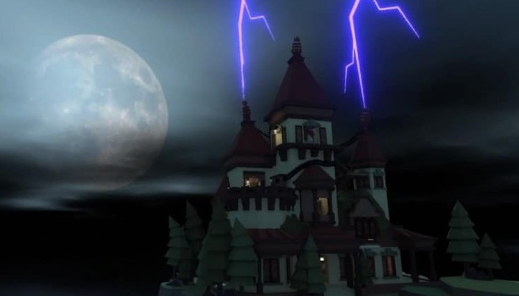
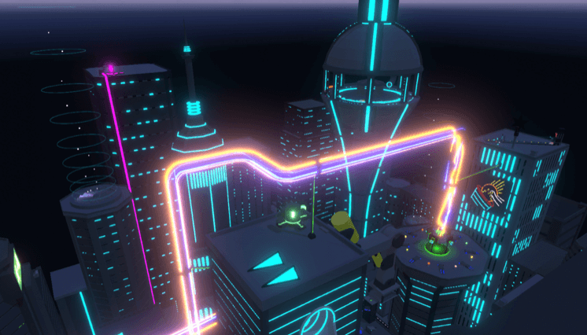
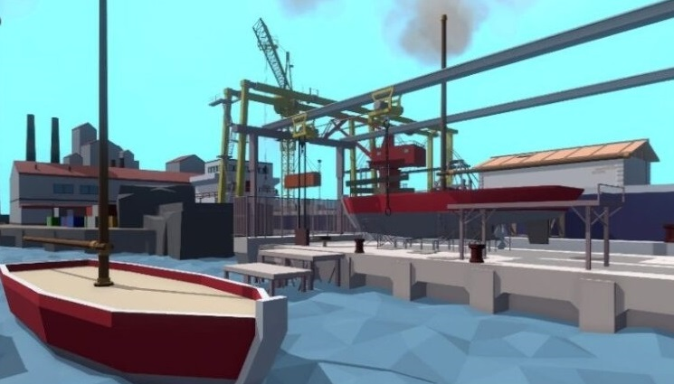
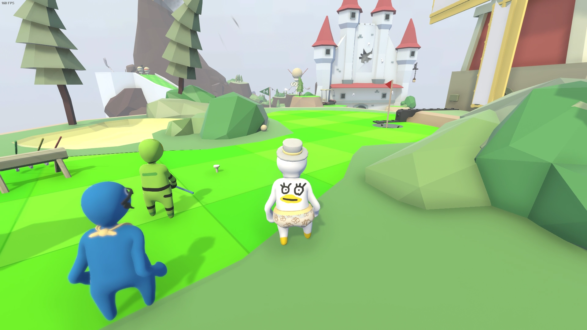
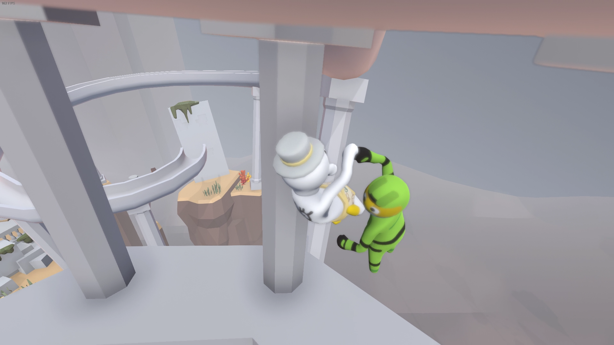
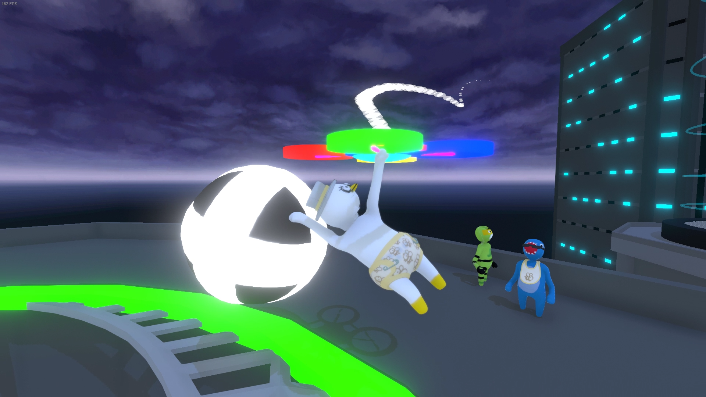

Human Fall Flatとは
『Human Fall Flat』は、No Brakes Gamesが開発したアクションゲームです。
思い通りに動かすことのできないふにゃふにゃのキャラクターを操作し、様々な世界で謎を解き明かしてクリアを目指す楽しさが魅力のゲームです。
多種多様なステージ
2024年7月時点ではステージ数は26種類！
闇夜の館や大都市、水中ステージなど個性的なマップが多く、今この瞬間にも新たなマップの製作が進められている。
- 
- 
- 
もっと楽しめる！マルチプレイ
このゲームは最大8人でのマルチプレイにも対応しており、協力してもよし、落としあってもよしの爆笑不可避のパーティゲームになりえる。
- 
- 
- 
奥が深い実績
このゲームには実績と呼ばれる称号が存在する。マップをクリアするといった簡単なものから、タイムアタックのような高難易度のものまで、初心者から上級者までが楽しむことができる。2024年7月時点では全127個の実績が存在する。
筆者の感想
私は3人でこのゲームを楽しんでおり、総プレイ時間は既に40時間を超えている。この数字からも分かるように、かなりやり込める要素のあるゲームとなっている。
1度のプレイで面白いクリップが10個以上も作れるため、終わった後にみんなで振り返ってそこで再び盛り上がることもできる。
多くの配信者も遊んでおり、そのユニークさと面白さから非常に人気があるゲームである。ぜひ1度は遊んでみてほしい。